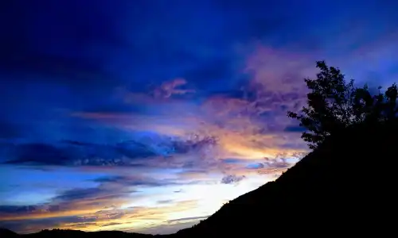
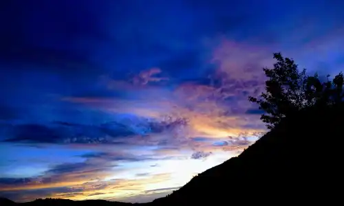
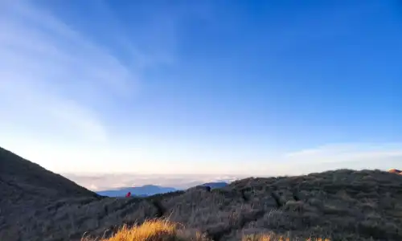
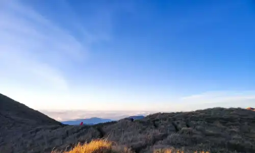

About Us
Want to go hiking but you have no one to go with or may be you don't know where to go to? Well,
look no more! Join us in conquering the highest peak in Luzon and witness expectacular landscape
views, sunrise or sunset, sea of clouds or the milkyway. You are welcome to join and we will help
you every step of the way. Open to all level of hikers, wether you're a begginer or an experienced
hiker, we've got a trail that's just right for you.
What you'll need
- DENR Fee- P175/person
- Environmental and Cultural Heritage Fee – P150/person
- Guide fee via Ambangeg Trail – P700/5 pax | via Akiki Trail P1800/7pax
- Medical Certificate indicating you're fit to hike or do strenuous activities.
- Hiking and camping paraphernalia
- Foods, water and snacks
- Jackets (temperature can drop to 0 degrees)
Popular Trails
Ambangeg Trail
The easy trail starts from Ambangeg, Bokod, Benguet, where hikers are brought
up to the ranger's station in Babalak, Kabayan by a vehicle. From there, the hike takes
about 3 hours to Mt. Pulag. Generaly considered as moderate with 3/9 difficulty level it is
great for begginers.
Every first saturday of the month
13:30
Akiki Trail
Dubbed as the Killer trail because of about 10 hour hike on a very steep trail (60-70
degree slope). The jump-off point is at Duacan, Kabayan, Benguet. It is considered an Expert
level climb with 7/9 difficulty level. For experienced hikers.
Every last saturday of the month
05:00
Soon to open!
Tawangan Trail
Aka the Bloody trail because of the notorious blood sucking Limatiks along the way,
it features a long trail in the mossy forest and takes about 10 hours on average to traverse.
This trail is less taken by hikers, so you meet almost no one along the trail.
Difficulty level is 5/9.
Watch out for the official opening to be posted here soon!


 



 
